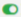

Mots-clès
« Mots-clés » contiennent des mots-clés de recherche. Ils sont catégorisés et associés à des clients. Ces mots servent à la fois de recherche et de soulignement. Les mots sont séparés par une barre verticale « | » et sans espace. Par exemple: omega 3|oméga 3|Omega-3|oméga-3|oméga|Omega|omega|OmegA|Oméga
Un mot-clé peut s'associe à plusieurs clients.
Vous pouvez ajouter, modifier, désactiver/activer un mot-clé et les télécharget dans une fichier en format csv.
Le mot-clé se cherche sans prendre en compte les différences des accents, majuscules ou minuscules. Pour le surlignement, il faut respecter les mêmes lettres avec accents, les majuscules et les minuscules. Donc c’est possible que l’application trouve le mot-clé mais ne le surligne pas !
Le mot-clé s’associe à une catégorie et des clients. Vous pouvez les ajouter un par un et les associer à des clients. Mais vous pouvez télécharger tous les mots-clés sur un fichier CSV, et le modifier, puis demander le développeur IT à l’importer par une ligne de commande.
 Ajoutez un mot-clé.
Ajoutez un mot-clé. Modifiez d'un mot-clé.
Modifiez d'un mot-clé.-  Désactivez ou activez un mot-clé.
 Historique des modifications d'un mot-clé.
Historique des modifications d'un mot-clé.